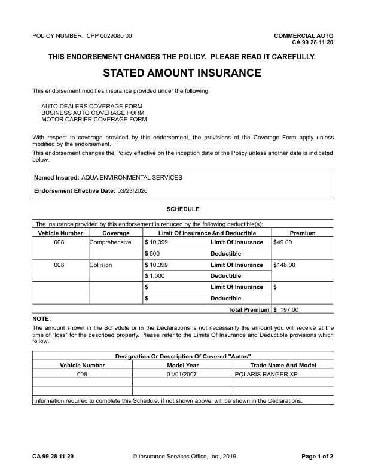
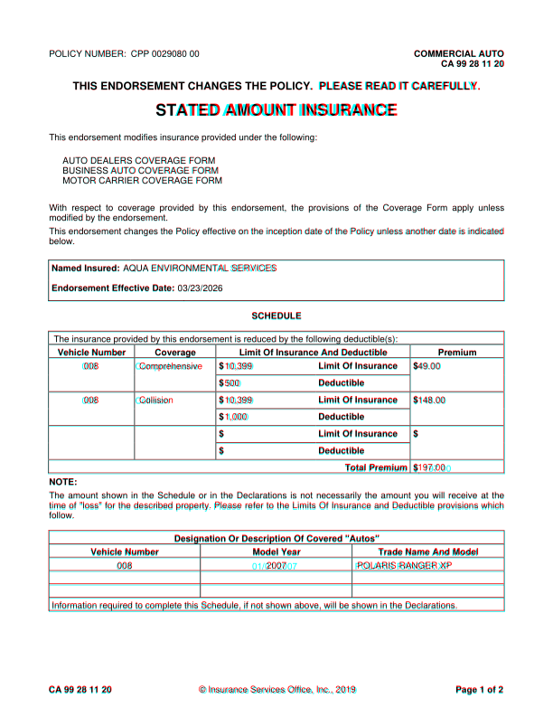
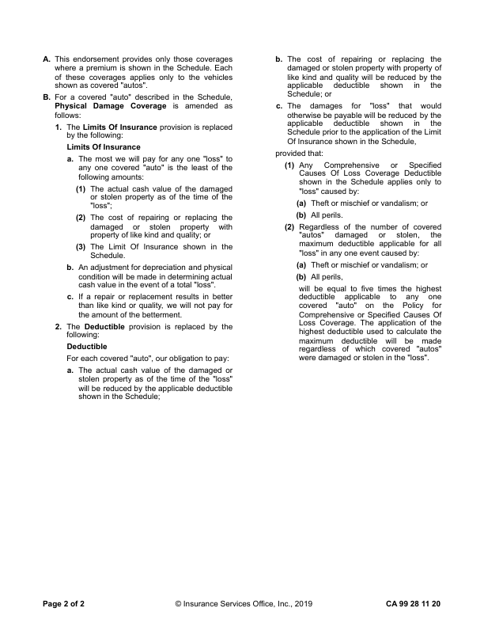
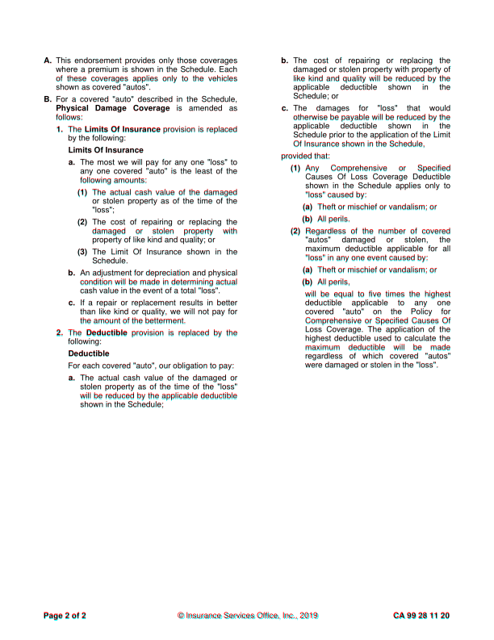

CA9928_1120: DIFFERENT score 99.9% pages golden 2 html 2 (pages with text) words golden 655 html 656 missing 0 extra 1 EXTRA (in the HTML render, not in the GhostDraft golden) [01] <= 008 01/01/2007 POLARIS RANGER XP golden C:\src\fact-docgen\src\Moe.Commercial.Documents.Generation.Integration.Tests\TestData\Snapshots\CA9928_1120\GoldenSnapshot.txt template C:\src\fact-poc\output\ghostdraft\batch\CA-99-28-11-20-Stated-Amount-Insurance.json serverxml C:\src\fact-poc\output\ghostdraft\serverxml\CA9928_1120\ServerXml.xml


moved AMOUNT (-3.3, +0.6)pt moved INSURANCE (-3.3, +0.6)pt moved 008 (-2.2, -0.3)pt moved Comprehensive (-4.4, -0.3)pt moved 197.00 (+6.4, +0.3)pt moved POLARIS (-2.5, -0.3)pt moved RANGER (-2.5, -0.3)pt moved XP (-2.5, -0.3)pt extra h rule at 287.6 (53.2-558.0) extra h rule at 380.6 (54.0-557.2) extra h rule at 395.6 (54.0-557.2) extra h rule at 433.1 (54.0-557.2) extra h rule at 470.6 (54.0-557.2) extra v rule at 53.6 (288.0-333.0)

